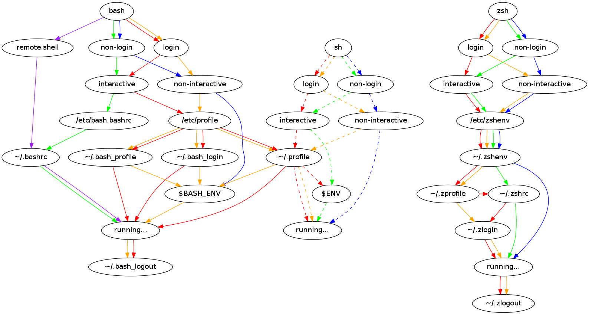

Shell startup scripts
Sun 17 February 2013 by Peter WardIf you’re a regular shell user, you’ve almost certainly got a .bash_profile or .bashrc script in your home folder, which usually contains various tweaks, such as setting environment variables (adding that directory to $PATH), telling your shell to do clever things (like set -o noclobber) and adding various aliases to commands (like alias please=sudo).
(If you’re really organised, you’ll have all your dotfiles in a repository somewhere so that you can keep your settings synchronised across all the machines you work on.)
Anyhow, I suspect that few people know when things like .bash_profile and .bashrc actually get executed. When I started, I just followed people’s advice of putting stuff in .bashrc, and then when it didn’t work, into .bash_profile. I could stop here and describe just the bash startup process (as silly as it is), but there’s a complication in that I switched to zsh a few years ago (and haven’t looked back), but occasionally use bash on machines which don’t have zsh installed.
In order to handle this nicely then, I need to be able to specify things which are specific to bash or zsh in their own files, and then to specify things which any POSIX-compliant shell (like aliases and environment variables) can understand in a common startup file.
My solution to this problem is to define some new dotfile folders, one for each shell (.bash/, .zsh/ and .sh/), and one for the shell-independent files (.shell/):
.bash/
env
interactive
login
logout
.sh/
env
interactive
login
.shell/
env
interactive
login
logout
.zsh/
env
interactive
login
logout
“But!”, you say, [1] “what do the different files in here do?” Ah, well I’m glad you asked. There are two kinds of shells:
- [non-]interactive shells (you type into them / shell scripts)
- [non-]login shells (the shell run when you first login / subshells)
All shells will first run env, then login shells will run login, then interactive shells will run interactive. Once finished, login shells will run logout.
Where to put stuff
It all depends on when it needs to be run.
If it’s setting / modifying environment variables, it should go in login. If it’s alias or a terminal-specific environment variable (e.g., GREP_COLOR), it should go in interactive. In my .shell/env file, I have my umask set, and also define some useful functions for modifying colon-separated path environment variables (like $PATH).
Even if you don’t adopt anything else from my scheme, I’d recommend you take a look at the what my functions are doing which differs from something like export PATH=$PATH:/path/to/dir.
That particular pattern is way too common, and is very dangerous if you consider the case when $PATH (or whatever your variable is, like $LD_LIBRARY_PATH) isn’t set. Then, the value will be :/path/to/dir, which usually means both /path/to/dir and the current directory, which is usually both unexpected behaviour and a security concern.
With my implementation (see .shell/env_functions), you can append, prepend and remove directories from any colon-separated environment variable, and when appending or prepending, you are guaranteed that directory will only then appear in that variable once.
As a side note, I’m very disappointed in my indirect_expand() function, so if you have a better solution, please let me know (or send me a pull request).
Implementation
In order to implement this, you first need an understanding of which startup files are run in each case. Of course, this isn’t hard, since all the shells have the same, sensible system. Ahahaha, no.
Fortunately, I’ve read the man pages for you, and drawn a pretty diagram. To read it, pick your shell, whether it's a login shell, whether it's interactive, and follow the same colour through the diagram. When the arrows split out to multiple files, it means that the shell will try to read each one in turn (working left to right), and will use the first one it can read.
An important point here is that if you have a non-login, non-interactive shell running a plain POSIX shell (dash, bash in sh compatibility mode), it won’t fulfil our contract in that it won’t read .sh/env (and hence .shell/env).
The other special case which exists is Bash’s remote shell mode (which is rather warped), where it tries to detect if it’s running under ssh or rsh (I assume by looking at the process name of its parent), and if so, follows a different path, which is indicated on the diagram.
Except that diagram shows what happens according to the man page, and not what happens when you actually try it out in real life. This second diagram more accurately captures the insanity of bash:

See how remote interactive login shells read /etc/bash.bashrc, but normal interactive login shells don’t? Sigh.
Finally, here’s a repository containing my implementation and the graphviz files for the above diagram. If your POSIX-compliant shell isn’t listed here, or if I’ve made a horrible mistake (or just a tiny one), please send me a pull request or make a comment below, and I’ll update this post accordingly.
| [1] | and since I’m writing this, I can make you say whatever I want for the purposes of narrative. |